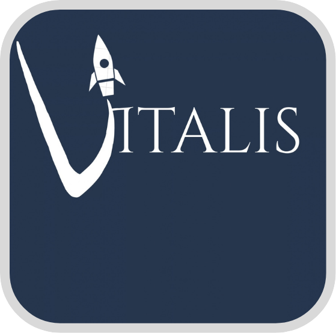

VITALIS
Lunar Sleep-Shift Scheduling Tool
VITALIS is our prototype system designed to help astronauts manage sleep, fatigue, naps, caffeine, and changing work shifts during space missions.

Why VITALIS?
Changing schedules
Different shifts can make it difficult to keep a consistent sleep schedule.
Fatigue
Not getting enough sleep can affect alertness, concentration, and performance.
Mission operations
Sleep opportunities need to work around important mission events and crew responsibilities.
How VITALIS works
Sleep Planner
Creates recommendations using sleep history, fatigue, hours awake, caffeine, shifts, and mission events.
Fatigue Score
Uses a 0–100 score to estimate fatigue and guide recommendations.
Shift Scheduling
Supports Night, Morning, and Evening shifts.
Check-In
Crew can record sleep, alertness, fatigue, and recommendation effectiveness.
Food & Caffeine
Tracks information that can be considered by the sleep planner.
Feedback
Saved feedback can help improve future recommendations.
From idea to prototype
Sleep, fatigue, circadian rhythms, nutrition, caffeine, and NASA research.
Explored a wearable/device idea before moving toward software.
Developed the prototype with Flutter, Dart, and a local database.
Tested different inputs and refined the scheduling system.
What we built
Home Dashboard
Shows information based on the user's role and provides access to VITALIS features.
Sleep Plan
Generates and saves a personalized sleep recommendation.
Crew Manager
Managers can manage crew information and crew can view their own profile.
History
Stores previous check-ins, feedback, and saved recommendations.
Settings
Includes appearance, font options, account information, and settings.
Authentication
Uses email verification and profiles to identify users and roles.
Watch our YouTube video
Learn more about the team, the process, and the VITALIS project in our video.
Watch on YouTubeProject visuals

What we added & refined
What We Added
- Sleep planner
- Fatigue score
- Shift schedule
- Mission events
- Check-ins
- Food and caffeine tracking
- Sleep history
- Crew profiles
- Saved recommendations
- Feedback system
What We Refined
- More personalized sleep times
- Better fatigue calculations
- Sleep history in planning
- Hours awake
- Caffeine information
- Work shifts
- Mission conflicts
- Feedback-based recommendations
- App layout and organization
What we learned
Early testing
Five test subjects were used during the first prototype testing.
Problem found
The first version gave everyone a 22:00 sleep time, showing that it was not personalized enough.
Our response
We added more inputs so schedules could respond to individual sleep, fatigue, shifts, caffeine, and mission information.
VITALIS Project Timeline
| Time | Milestone | What VITALIS Should Have |
|---|---|---|
| August 2026 | Project Kickoff & Brainstorming | Understand the NASA problem, research astronaut sleep, brainstorm hardware and software solutions. |
| August–September 2026 | Research & Initial Design | Research sleep, fatigue, melatonin, nutrition, caffeine, wearable technology, and NASA requirements. |
| September 2026 | First Prototype | Build the first working version of the VITALIS software. |
| September 2026 | Initial Testing | Test the sleep recommendation system and identify problems with personalization. |
| October–December 2026 | PDR Preparation | Improve the prototype to at least a 60%+ working prototype, prepare the website, DAAN, presentation board, prototype video, and presentation. |
| PDR — October–December 2026 | Preliminary Design Review | Present the early/semi-functional prototype and receive feedback from NASA HUNCH mentors and engineers. |
| After PDR | Refinement | Use NASA feedback to improve the sleep algorithm, shift matching, testing, and prototype. |
| January–March 2027 | CDR Preparation | Reach approximately a 90%+ working prototype, improve testing/data, website, DAAN, brochure, videos, and presentation. |
| CDR — Late January–Early March 2027 | Critical Design Review | Present the improved functional prototype to NASA HUNCH mentors and engineers. |
| After CDR | Final Refinement & Testing | Use CDR feedback, continue testing, improve accuracy, and prepare the final version. |
| May 4–6, 2027 | FDR / Final Design Review | If selected as a finalist, present VITALIS at Johnson Space Center in Houston. |
Meet the creators
Kitzel Mendiola
Helped build and refine the prototype while contributing to the system's user experience.
Hipolito Olvera
Focused on concept development, design, and project coordination.
Aracely Oviedo
Contributed to the team’s research, testing, and project development.
Get in touch
Kitzel Mendiola
Email: 2201915@stu.bisd.us
Hipolito Olvera
Email: 1602274@stu.bisd.us
Aracely Oviedo
Email: 2802045@stu.bisd.us
Mentors & Support
Maria G. Vasquez
Teacher support and educational guidance.
Email: mgvasquez@bisd.us
Phone: (956) 698-2264
Bibliography
| # | Source |
|---|---|
| 1 | Flutter. “Flutter Documentation.” Flutter, Google. https://docs.flutter.dev/ Used for building the VITALIS application interface, navigation, widgets, state management, and Windows desktop application. |
| 2 | Dart. “Dart Documentation.” Dart, Google. https://dart.dev/guides Used for Dart programming syntax, classes, functions, variables, asynchronous programming, and application logic. |
| 3 | Flutter Blue Plus. “FlutterBluePlus Documentation.” pub.dev. https://pub.dev/packages/flutter_blue_plus Used as a reference for the Bluetooth functionality planned for connecting VITALIS to wearable/biometric devices. |
| 4 | sqflite_common_ffi. “sqflite_common_ffi.” pub.dev. https://pub.dev/packages/sqflite_common_ffi Used for implementing the local SQLite database so VITALIS can store crew information, food intake, mission events, sleep logs, fatigue data, recommendations, and feedback while operating offline. |
| 5 | Path Provider / Path. “path.” pub.dev. https://pub.dev/packages/path Used to construct the local database file path for the VITALIS offline database. |
| 6 | NASA. “Space Food Systems.” NASA. https://www.nasa.gov/directorates/esdmd/hhp/space-food-systems/ Used as a reference when developing the VITALIS food and nutrition database. |
| 7 | NASA. “Food in Space.” NASA. https://www.nasa.gov/ochmo/food-in-space/ Used for background information about astronaut food and nutrition requirements. |
| 8 | NASA. “Risk of Inadequate Food and Nutrition.” NASA. https://www.nasa.gov/reference/risk-of-inadequate-food-and-nutrition/ Used to understand how nutrition can affect astronaut health and mission performance. |
| 9 | NASA. “JSC Food & Nutrition.” NASA. https://www.nasa.gov/reference/jsc-food-nutrition/ Used for information about food and nutrition considerations for human spaceflight. |
| 10 | NASA. “Crew Systems.” NASA. https://www.nasa.gov/reference/crew-systems/ Used for background information about systems designed to support astronauts during missions. |
| 11 | NASA. “Artemis II: What’s on the Menu?” NASA, March 3, 2026. https://www.nasa.gov/missions/artemis/artemis-2/artemis-ii-whats-on-the-menu/ Used as a current reference for Artemis astronaut food and meal planning. |
| 12 | NASA. “Life Encapsulated Inside NASA’s Orion for Artemis II.” NASA. https://www.nasa.gov/humans-in-space/life-encapsulated-inside-nasas-orion-for-artemis-ii/ Used for information about food and crew-support systems aboard Orion. |
| 13 | NASA. “Space Nutrition.” NASA. https://science.nasa.gov/wp-content/uploads/2023/10/Space_Nutrition_Book.pdf Used for background research on astronaut nutrition and the relationship between nutrition and spaceflight. |